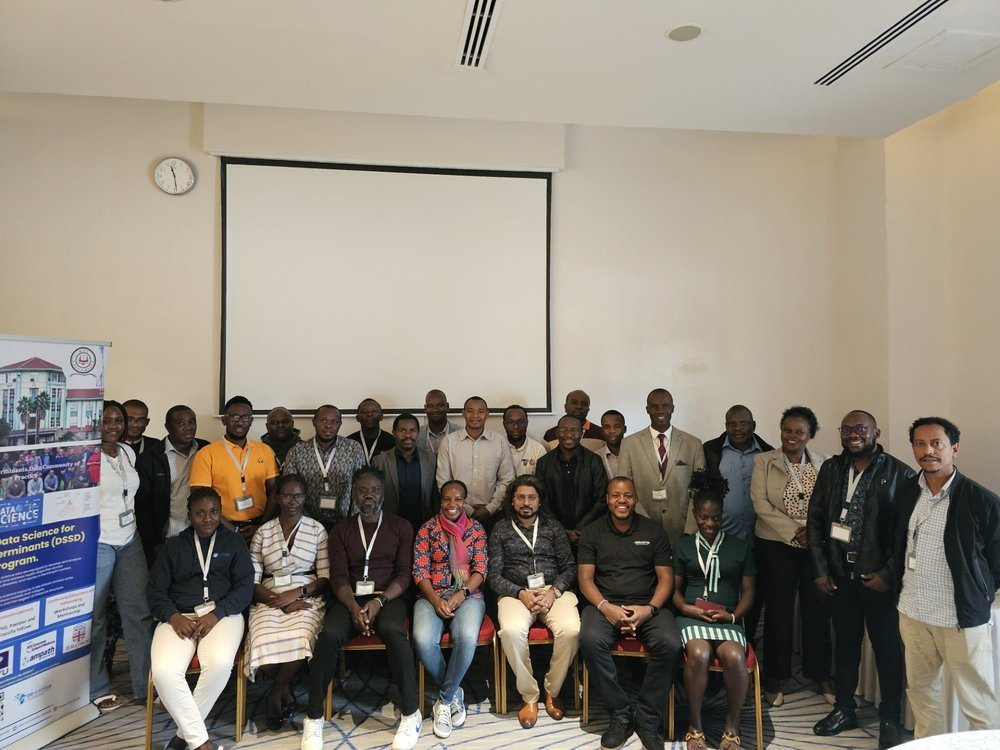
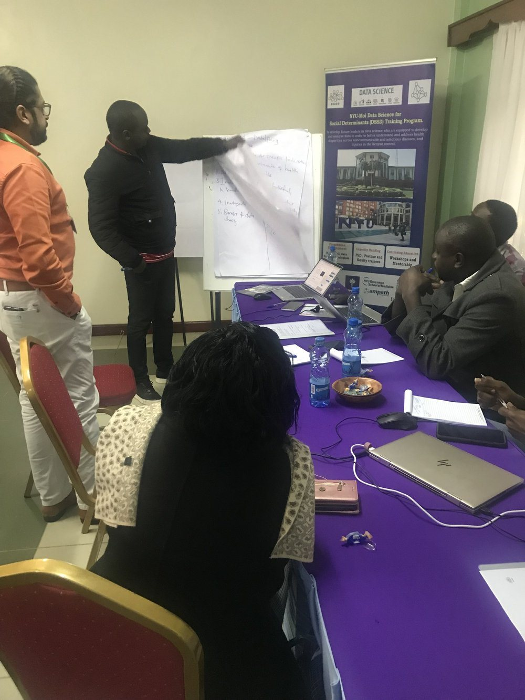
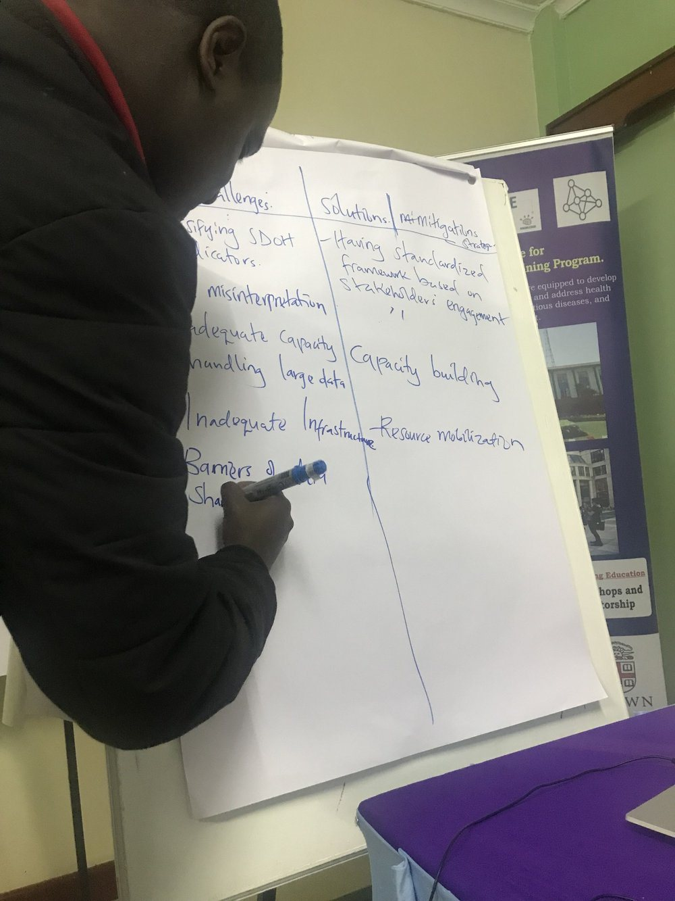

Community of Practice
Archive of the program website
Social Determinants Data Community of Practice
Our community of data scientists, spanning diverse areas of East Africa and beyond, is driven by a shared recognition: the imperative to inform data analytic models that holistically embrace the social determinants of health (SDoH). We are propelled by the idea that knowledge and best practices which are established globally, find their most potent expression when nurtured by local insights. Here, we are not just architects of databases and models; we are stewards of a Community of Practice. We are committed to harnessing the collective wisdom of our experts, fostering social learning, and channeling this rich tapestry of expertise and local context into models that transcend convention. These models shall not only rigorously capture the intricate effects of SDoH but also catalyze transformative interventions, refine practice, shape informed policies, and, above all, propel us toward healthier, more equitable societies across our home and beyond.

Other social determinant efforts
- PhenX Toolkit: This toolkit collects measures for phenotypes and exposures in many areas of biomedical research and is funded/directed by the NIH/NHLBI. They have data on substance abuse and addiction, tobacco usage, mental health research, COVID-19, blood diseases, and social determinants of health.
- Environmental Justice Index: EJI uses data from the US Census Bureau, EPA and Mine Safety, Health Administration and CDC to study environmental injustice across the country. EJI collects 36 environmental, social and health factors including race, ethnicity, age, Internet access, disability, language barriers, and more.
- SDOH - Agency for Healthcare Research & Quality: The main five domains of SDOH are covered in this US focused project including social factors, economic context, education, physical infrastructure, and healthcare context (area-based data).
Group forum
The working group had a forum where members could share their research, database knowledge, grants, funding opportunities and papers. Visit the working group forum.
Working group members
AMPATH Kenya
- Getrude Anusu, BSc
- Antony Ngeresa, BSc
- Richard Near, MSc
- Michael Odawa, MSc Student
Moi University
- Rodrigue Ndabashinze, MSc
- Robert Mengich, MSc
- Vitalis Orango, MSc [also AMPATH Kenya]
- Doreen Kiconco, MSc
African Population Health and Research Centre (APHRC)
- Adero Ooko, MSc
- Nelson Langat, MSc
Aga Khan University
- James Orwa, MSc
- Jasmit Shah, PhD
Gulu University
- Peace Aber, MSc
Makerere University
- Ezra Musingye, BSc
Kisii University
- Lameck Ondieki, MSc
Maryland Global Initiatives Cooperative
- Paul Mubiri, MSc
Brown University
- Rophence Ojiambo, MSc
Centre for Health & Development, University of Port Harcourt, Nigeria & Durban University of Technology, Durban, South Africa
- Felix Emeka Anyiam, MPH MSc (Leader of Scoping Review)
Social Determinant of Health Data Index
The DSSD Community of Practice conducted a survey to identify and organize existing data sources related to social determinants of health across Sub-Saharan Africa. This living index, continuously updated to reflect new and evolving data, will address a critical gap in data resources while also fostering expertise in social determinants of health.
All ownership and access rights will remain with the original data holders, respecting their preferences, while the index will simply enhance visibility and discoverability.
A summary of the collected datasets is shown on the map below. If the map does not appear, open it in its own page.

